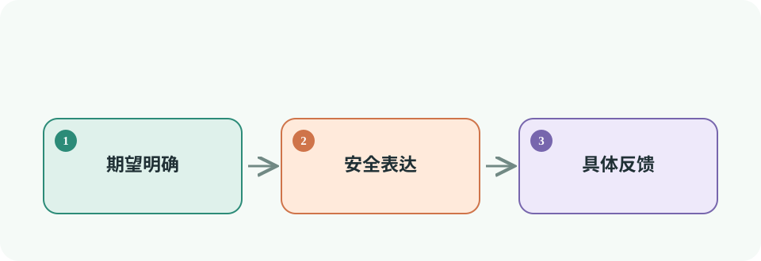
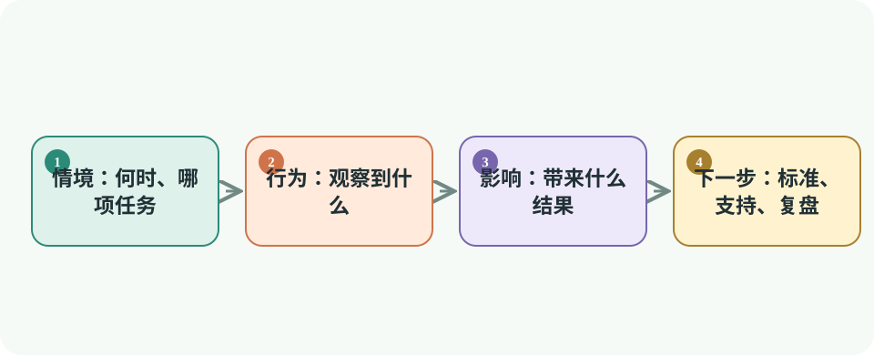

管理反馈：把评价变成可观察的下一步
清楚表达期望，也让下属能解释、提问和报告风险
01 · 从一个具体问题开始
当管理者说“你要主动一点”“做得更专业”，下属可能不知道下一步具体要做什么，也不知道怎样判断自己是否达到要求。权力差还会影响信息质量：如果提出疑问就可能被认为不配合，团队就更难发现风险。
把反馈锚定在具体情境、可观察行为和实际影响，再邀请对方补充原因，最后协商标准、支持与检查点。
02 · 把方法拆成可观察的动作
向上汇报、同事协作与管理反馈：把目标、责任、风险和决策说清楚。 这些动作是教学工具，不是必须逐字套用的公式。

期望明确
描述具体场景、行为和影响（SBI），不要上升到人格。
安全表达
邀请下属解释原因、表达不同意见，确认心理安全与资源约束。
具体反馈
协商明确的行为改进、支持责任、检查点和复盘时间。
03 · 多轮案例：回应怎样随着信息推进
新员工任务案例说明：管理者不仅要说“做什么”，还要把“做到什么程度”和“遇到问题找谁”讲清楚。
安排新员工任务
新员工刚入职，不清楚首周任务的期望和验收标准。
沟通目标：给新员工任务清单与验收标准。
我今天先做什么？
今天先整理基础资料清单中的第一部分。首周目标是在三天内完成基础资料整理，我会给你示例，先做一份给我看。
做到什么程度算好？
标准有三条：资料来源可追溯、字段完整、命名统一。完成第一份后我们一起检查，确认理解一致，再批量推进。
示范回应用于观察结构，不是唯一正确答案。真实沟通应根据事实、关系和风险调整。

04 · 交互拆解：逐步检查每个动作
选择一个动作，观察它解决的具体问题。所有步骤默认都在页面中可读；按钮只是帮助你聚焦其中一层。
怎样把沟通原则变成下一句话
期望明确
描述具体场景、行为和影响（SBI），不要上升到人格。
检查点：这一轮是否回应了对方刚刚提出的具体问题？
安全表达
邀请下属解释原因、表达不同意见，确认心理安全与资源约束。
检查点：这一轮是否回应了对方刚刚提出的具体问题？
具体反馈
协商明确的行为改进、支持责任、检查点和复盘时间。
检查点：这一轮是否回应了对方刚刚提出的具体问题？
当前聚焦第 1 步。
05 · 常见失误与适用边界
- 用人格标签替代行为描述。
- 只提要求不确认资源、培训和优先级。
- 表面说欢迎反馈，却在对方提出风险时立刻惩罚或羞辱。
任何沟通框架都不能替代事实核查、正式流程、法律意见或现实安全判断。遇到不确定信息，应明确说出未知并约定核验方式。
06 · 把文章变成一次练习
准备反馈时，先写下你能被第三方观察到的事实，再写影响和一个具体请求；最后留出空间让对方说明约束。
安排新员工任务
在训练页打开这道案例，先隐藏参考、逐轮作答，再做四维自评。
07 · 来源与说明
本文区分外部框架、项目教学改编和案例示范。引用只支持来源中明确涉及的概念，不代表本文所有表达步骤均经过实验验证。
- Center for Creative Leadership · SBI Feedback · https://www.ccl.org/articles/leading-effectively-articles/closing-the-gap-between-intent-and-impact/（Situation–Behavior–Impact feedback model）
本文的案例、步骤顺序、互动拆解和四维自评属于言习课程设计。项目自评用于个人纵向复盘，不是经心理测量验证的量表，也不是任何机构的认证课程。